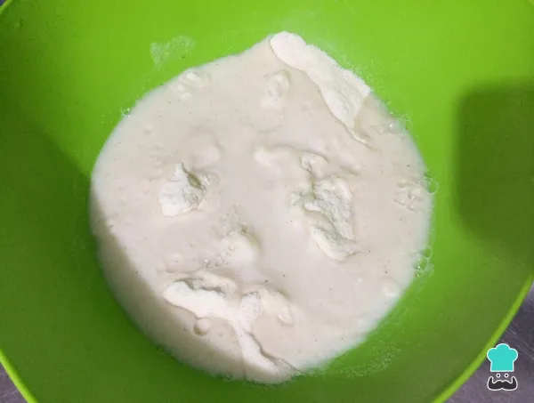
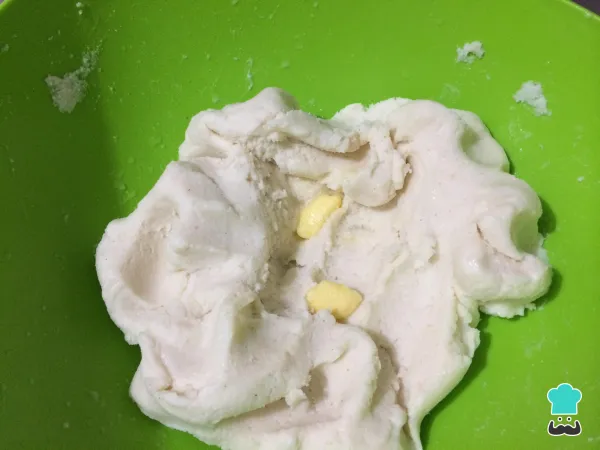
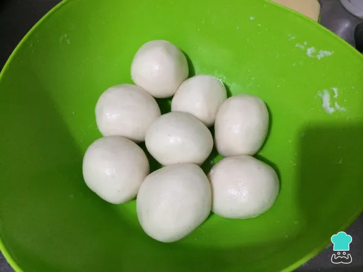
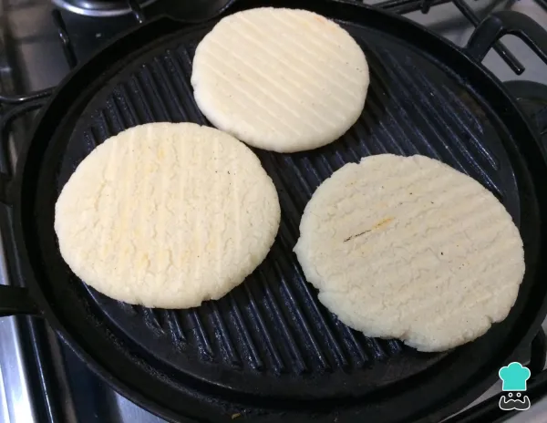
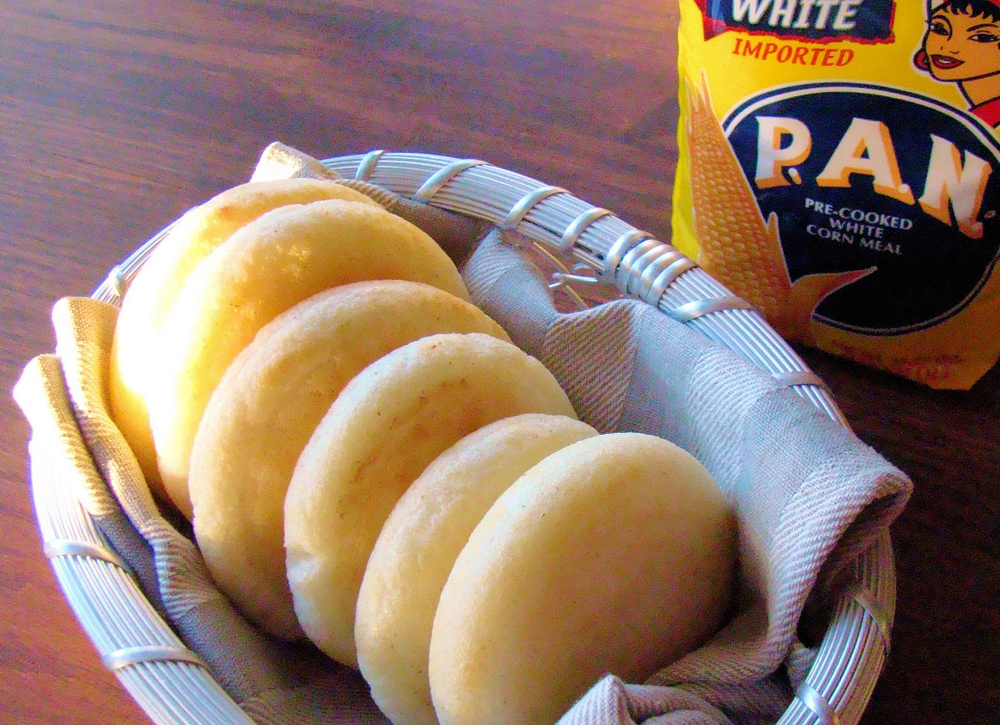

As arepas são um pão sem glúten tradicional em vários países latino-americanos, onde o milho
é o ingrediente principal na dieta. Esta massa, feita de farinha de milho, é geralmente servida
ao café da manhã com uma infinita variedade de recheios. As arepas venezuelas destacam-se por
serem as mais conhecidas um pouco por todo o mundo, por isso não perca esta receita de arepas
venezuelanas fácil e rápida
Ingredientes
500 gramas de farinha de milho marca PAN (de preferencia) ou farinha de milho fina (fubá)
Colher de café de sal
1 colher de café de manteiga amolecida
500 mililitros de água quente
Queijo em fatias (opcional)
Conheça um poco mais
Modo de preparo
Coloque a farinha numa tigela, dissolva o sal na água e misture até obter uma massa homogênea.

Sovar a masa muito bem com as mãos até obter uma massa de arepa compacta e lisa,
acrescente a manteiga e volte a sovar, para incorporar.

Modele bolas de tamanho médio e deixe repousar por alguns minutos.

Abra as bolinhas de massa até obter rodelas com cerca de um dedo de espessura.
Cozinhe numa grelha em temperatura baixa, até que fiquem douradas de ambos os lados.

Dica: As arepas também pode ser fritas em vez de grelhadas.
Quando estiverem prontas, abra as arepas, recheie com o queijo em fatias.

Pincele as arepas venezuelas com um pouco de manteiga e polvilhe uma pitada de sal.
Desfrute ao café da manhã ou ao lanche, bom apetite!